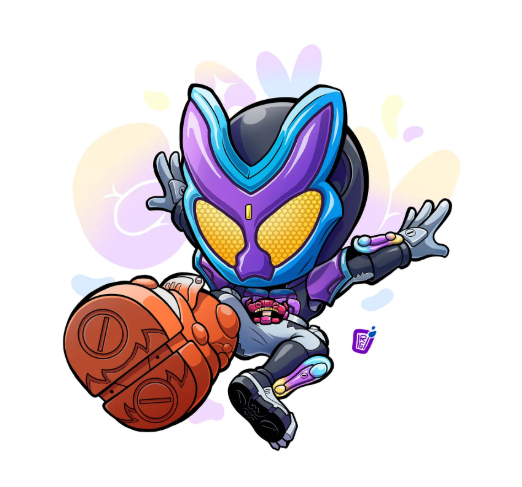

Zero-One · 2019
Zero-One
A young company president fights for a future where humans and A.I. can smile together.

The next chapter
2019 — NOW · A NEW FUTURE TAKES SHAPE
A story still unfolding
Meet a new generation of heroes bringing fresh ideas, big transformations, and plenty of heart.
Original fan-made masked-hero portraits accompany Riders without provided artwork.
Zero-One · 2019
A young company president fights for a future where humans and A.I. can smile together.
Saber · 2020
A novelist and swordsman protects the bonds between people and the stories they share.
Revice · 2021
A hero and his demon partner team up to protect their family and the world.
Geats · 2022
A cool-headed competitor enters a mysterious game to make his ideal world real.
Gotchard · 2023
A high-school alchemist forms a bond with the Chemies and discovers his own potential.

06Gavv · 2024
A mysterious visitor finds joy in sweets and stands up for people in danger.
Zeztz · 2025
A dream agent transforms to protect people from nightmares.